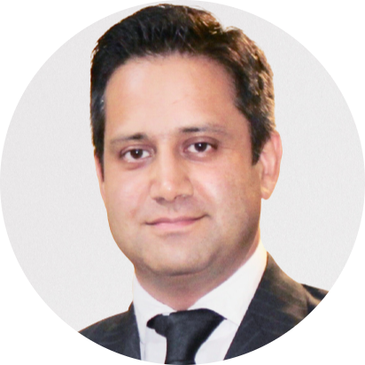

Enterprise AI & Translational Informatics
Bristol Myers Squibb
Leadership across AI, bioinformatics and translational informatics initiatives supporting biomarker discovery, oncology and precision medicine.
Connecting Artificial Intelligence, scientific innovation and enterprise technology to help organisations turn complex challenges into meaningful outcomes.

Dr. Ashfaq Mir is an AI, data science and digital transformation leader with a Ph.D. in Data Science (Bioinformatics) and more than 20 years of professional experience spanning pharmaceutical, biotechnology, healthcare, research and global consulting environments.
He combines enterprise transformation leadership with deep technical expertise across Generative AI, large language models (LLMs), retrieval-augmented generation (RAG), machine learning, data engineering, cloud platforms and MLOps.
His experience spans the full transformation lifecycle: identifying high-value opportunities, defining strategy, shaping technology architectures, developing solutions, implementing platforms and driving adoption across complex global organisations.
His distinctive expertise lies at the intersection of AI, life sciences and enterprise business transformation. He connects scientific and clinical needs with data platforms, AI capabilities, regulatory considerations and business priorities.
Bringing scientific understanding, technology leadership and business thinking together to create solutions with lasting value.
A track record of leading complex transformation programmes, building global teams and connecting innovation with business value.
A multidisciplinary career across scientific research, pharmaceutical innovation, diagnostics, consulting and enterprise technology leadership.
Leadership across AI, bioinformatics and translational informatics initiatives supporting biomarker discovery, oncology and precision medicine.
Led enterprise Generative AI and scientific informatics transformation initiatives, including AI-enabled knowledge management and regulatory workflows.
Led the BIDataLand transformation programme, connecting research, clinical and translational data capabilities and leading global multidisciplinary teams.
Contributed to advanced diagnostics, biomarker discovery, clinical analytics and translational science initiatives.
Conducted multi-omics and computational research, applying machine learning and statistical modelling to biological and clinical datasets.
Built foundations in bioinformatics, data analysis, scientific software development and computational workflows.
A combination of scientific, technical and strategic capabilities across the modern digital transformation landscape.
LLMs, RAG, AI agents, intelligent automation, AI strategy and responsible AI adoption.
Machine learning, advanced analytics, cloud data platforms, data architecture and MLOps.
Computational biology, genomics, transcriptomics, epigenomics and biomarker discovery.
Clinical research, translational informatics, real-world evidence and scientific platforms.
Precision medicine, digital pathology, clinical analytics and AI-enabled diagnostics.
Technology strategy, AI product development, business growth, transformation roadmaps and executive advisory.
University of Côte d’Azur, France
2012–2015
North Star Award – Data Engineering, 2023
Best AI/ML Use Case, 2023
Best Client Programme – BIDataLand, 2023
Author and contributor to scientific research with 8+ peer-reviewed publications.
My mission is to help life sciences, healthcare and enterprise organisations turn AI and data into measurable business value, faster innovation and better-informed decisions.
VAAKH Technologies brings together AI, scientific expertise and engineering excellence to help organisations move confidently from ideas to implementation.
START A CONVERSATION →